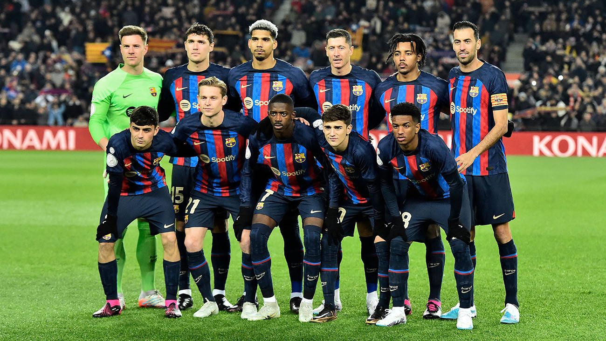

Története
Az FC Barcelona Spanyolország Katalónia tartományának labdarúgócsapata. A klub a spanyol labdarúgó-bajnokság kezdetétől megszakítás nélkül részt vesz az első osztály bajnoki küzdelmeiben. Az egyesületet 1899. november 29-én alapította a svájci Hans Gamper. Az FC Barcelona előbb a katalán regionális bajnokságban és a spanyol labdarúgókupában, később pedig az 1928-ban megalakított egységes spanyol labdarúgó-bajnokságban és a nemzetközi kupákban vált a spanyol, valamint a nemzetközi labdarúgás egyik legmeghatározóbb egyesületévé.
Játékosok

- Marc-André ter Stegen
- Iñaki Peña
- Alex Balde
- Ronald Araujo
- Jules Kounde
- Eric Garcia
- Jordi Alba
- Andreas Christensen
- Piqué
- Hector Bellerin
- Marcos Alonso
- Busquets
- Frenkie de Jong
- Pedri
- Riqui Puig
- Franck Kessie
- Gavi
- Sergi Roberto
- Raphinha
- Ousmane Dembélé
- Ansu Fati
- Robert Lewandowski
- Memphis Depay
- Ferran Torres
Nyerességek
- Bajnokok Ligája/BEK: 4 győzelem: 1991-1992, 2005–06, 2008–09, 2010–11
- UEFA-kupa/Vásárvárosok kupája 3győzelem: 1958, 1960, 1966
- Európai szuperkupa: 4 alkalommal: 1992, 1997, 2009, 2011
- Kupagyőztesek Európa-kupája (KEK): 4 győzelem: 1979, 1982, 1989, 1997
- FIFA-klubvilágbajnokság: 1 alkalommal: 2009
- Spanyol szuperkupa-győztes: 1948, 1952, 1953, 1984, 1992, 1993, 1995, 1997, 2005, 2006, 2009
- Spanyol ligakupa: 2 győzelem: 1983, 1986
- Catalunya kupa: 6 győzelem: 1990–91, 1992–93, 1999–2000, 2003–04, 2004–05, 2006–07
- Copa Latina: 2 győzelem: 1949, 1952
- Martini & Rossi kupa: 2 győzelem: 1952, 1953
- Kis világbajnokság: 1957
- Ramón de Carranza kupa: 3 győzelem: 1961, 1962, 2005
- Ciudad de Palma kupa: 5 győzelem: 1969, 1974, 1976, 1980, 1981
- Pireneusi kupa: 4 győzelem: 1910, 1911, 1912, 1913